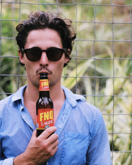
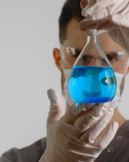
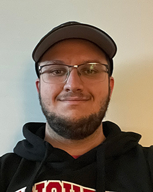
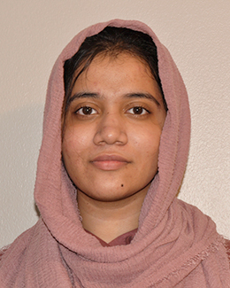

About Us
About Astro
Astro Digital is an marketing agency, estabilished to make your dream come true. By offereing high quality services in web-designing, graphic designing and motion designing, we give your brand its true identity. In today's world, there are indeed many agency that offers the same services as we do. But what make us different from them is our ability to understand and emotionally connect to your brand. By doing do, you can see your brand thriving in a way you always wanted to. Our clients are important to us. We strive to connect, understand and help our them succedd their brand.Book us a call or email us if you also want something better for your brand.
Ayman
Ayman designs, illustrates and
enjoys desserts more than most.
Ameem
Ameem develops websites, teaches
dancing and consumes all sci-fi.
YING
Ying is in charge of coding
and loves making videos and design.
DESIGNER
Ayman is a graphic designer. Her greatest interest is solving problems in visual communication for people. She likes to study user experience and interface design. When she is not working she loves to draw, try new types of coffee and desserts.
DEVELOPER
Ameem is a web developer. She likes to experiment with HTML, CSS and JavaScript. Liz creates sites that delight and inform. When not working, she reads books and watches science fiction films. On weekends she teaches samba to the children in her community.
Emre
Emre designs, illustrates and
enjoys desserts more than most.
Matthew
Matthew illustrates, coordinates
and manages all team members.
Immama
Immama designs, illustrates and
enjoys studying more than most.
DESIGNER
Hello there! I am a team member of Astro Digital. I am responsible for UX/UI design and front-end parts for our clients. My role is to create responsive wireframes which are suitable for front-end and back parts. After graduating from Fanshawe College I am working for Astro Digital since 2022 as UX/UI junior designer and junior front-end dev.
DESIGNER
Hello, my name is Matthew Tenuta and I am the Head Graphic Designer at Astro Digital. Our main goal at Astro Digital is to help grow your company into something which reflects your values and you can be proud of. As the Head Graphic Designer, it is my responsibility to visualize and create graphics as well as other media you need. I have experience with front end development as I provided some HTML for our Astro Digital website. I am currently a second year student in the Fanshawe College interactive media design program, and after graduating I hope to obtain a job related to graphic design/video editing. I work hard and try my best in any project I work on whether individual or a group project. I had a lot of fun working with my colleagues on this project and I hope to learn and create more in the future.
MOTION DESIGNER
Hi Ya'll. I am Immama. As you might have seen from the above heading, I am a designer and a developer too. I specialize in understanding Astro Digital's clients problems, designing a human-centered design for them, prototype it and help in coding it. As a UX designer and Front-End developer, it is my duty to provide our clients the results and solutions they always have wished for. With experise in HTML, CSS and JavaScript, I strive to give life to design that I have made for our clients at Astro. Graduating at Fanshawe College with advanced diploma in Interactive Media Development - 3D Visualization, I always wished to work for a company that values people's dreamms, emotions and help them build it(in this case websites, marketing solutions). By working at Astro Digital, I feel good and can also see my own wish come true.